Explore major airports across Malaysia including KLIA, Penang, Langkawi, Sabah and Sarawak
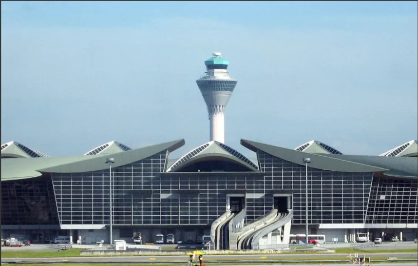
Sepang, Selangor
Main international airport connecting Malaysia to global destinations.
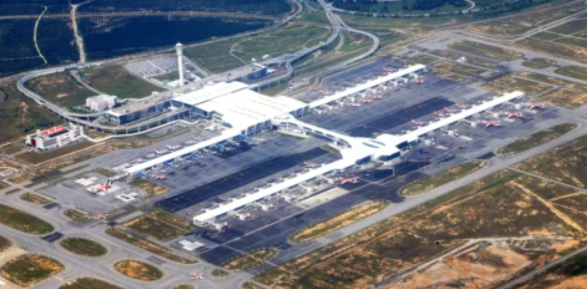
Sepang, Selangor
Budget airline hub for AirAsia, with shops and dining facilities.
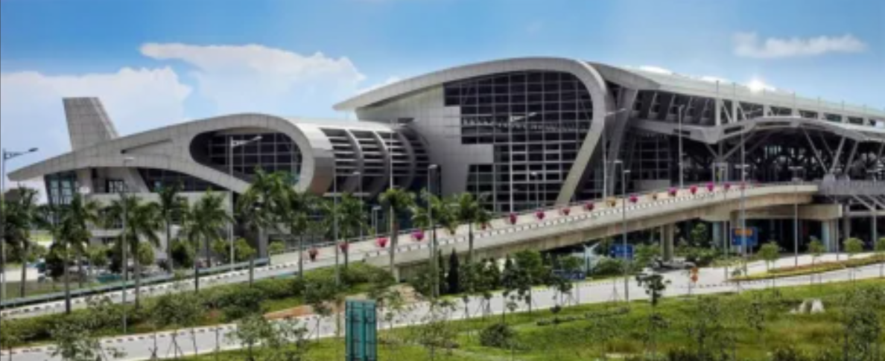
Kota Kinabalu, Sabah
Main gateway to Sabah with domestic and regional flights.
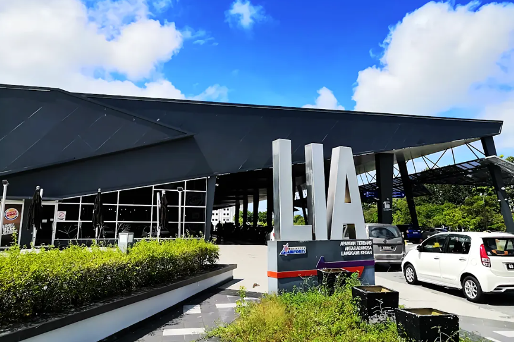
Langkawi, Kedah
Tourist airport near resorts and beaches with domestic & seasonal international flights.
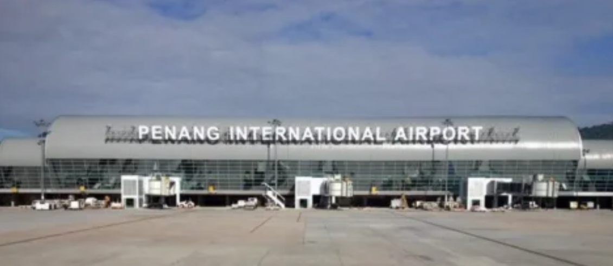
Bayan Lepas, Penang
Major northern airport with domestic & international flights.
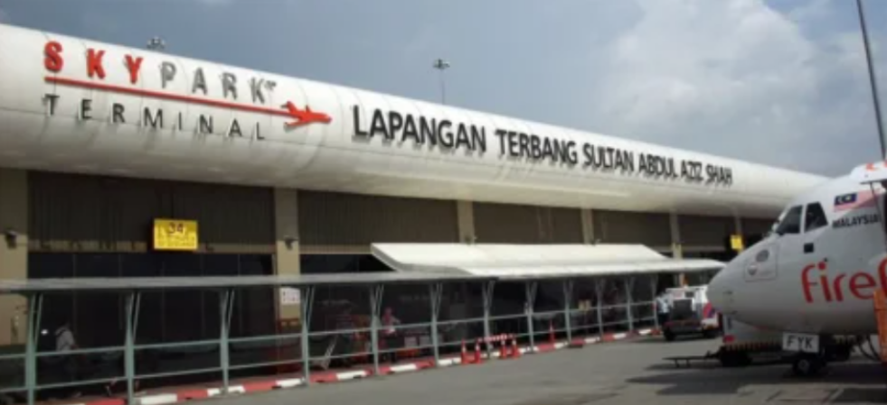
Subang, Selangor
Hub for turboprop & corporate domestic flights.
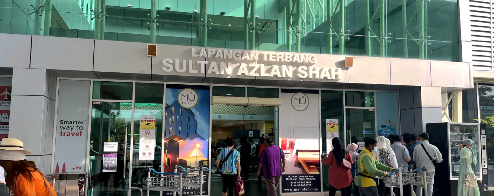
Ipoh, Perak
Domestic airport connecting Perak with Kuala Lumpur & Penang.
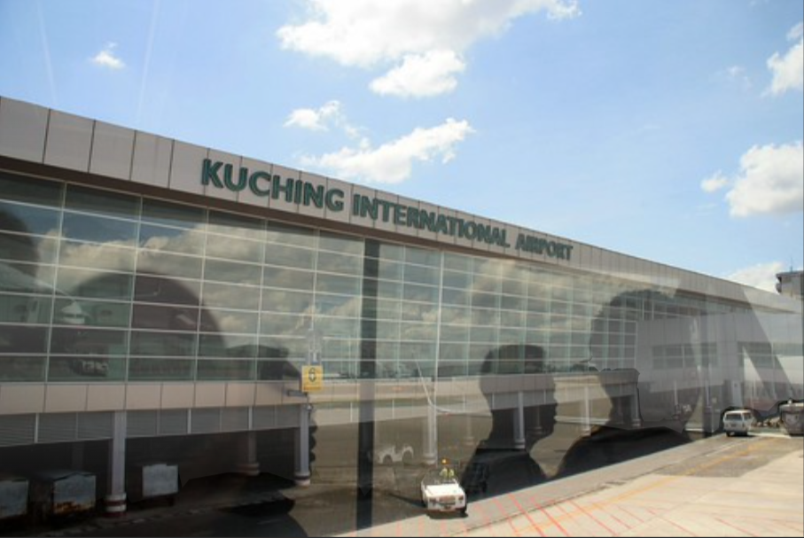
Kuching, Sarawak
Main Sarawak airport handling domestic & regional flights.
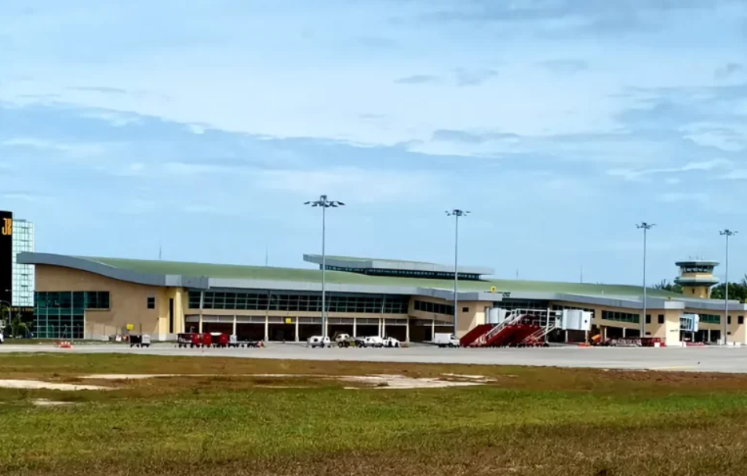
Miri, Sarawak
Northern Sarawak airport with domestic & regional flights.
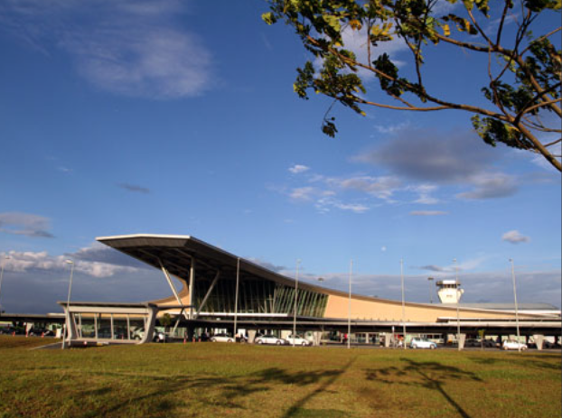
Senai, Johor
Domestic airport serving southern Malaysia & Johor Bahru.
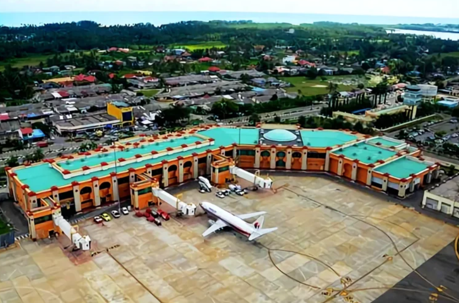
Kota Bharu, Kelantan
Domestic flights hub supporting regional connectivity in Kelantan.
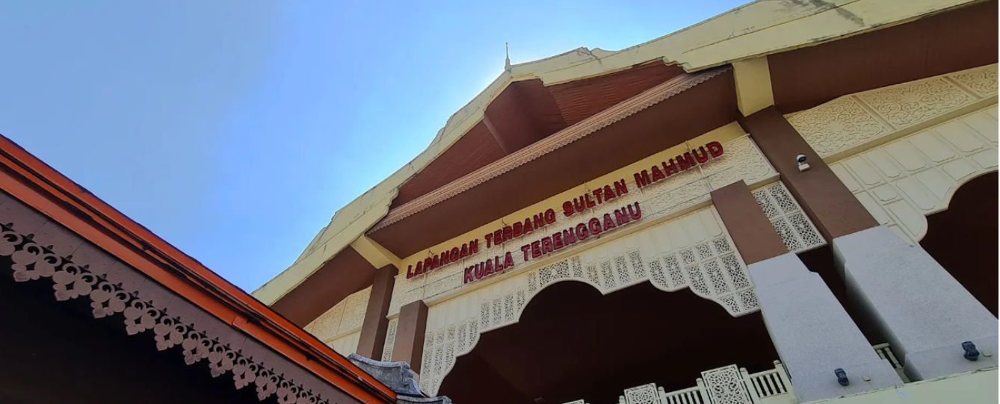
Kuala Terengganu, Terengganu
Domestic airport with easy access to east coast tourist spots.